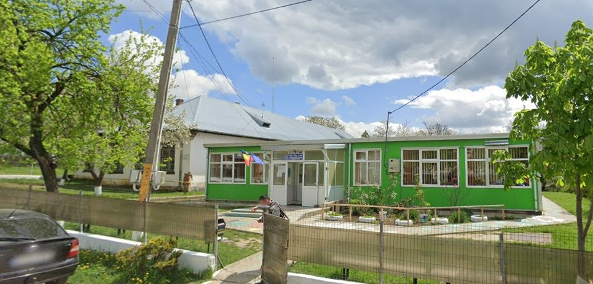
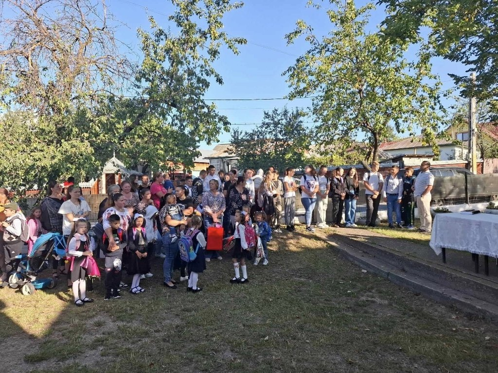

UNITATE DE ÎNVĂȚĂMÂNT
Profil instituțional & Structură
Școala Gimnazială Tansa este o unitate de învățământ public ce coordonează activitatea școlară din comuna Tansa, incluzând ca structură arondată Școala Gimnazială Suhuleț (clasele I-VIII).
Școala Gimnazială Tansa
Instituție publică de învățământ, cu activitate pentru nivelurile primar și gimnazial.

UNITATE DE ÎNVĂȚĂMÂNT
Școala Gimnazială Tansa este o unitate de învățământ public ce coordonează activitatea școlară din comuna Tansa, incluzând ca structură arondată Școala Gimnazială Suhuleț (clasele I-VIII).
FACILITĂȚI & INFRASTRUCTURĂ
Activitatea educațională se desfășoară în corpurile de clădire din Tansa și Suhuleț. Spațiile sunt încălzite centralizat și dispun de 14 săli de clasă primitoare și o bibliotecă școlară.
POPULAȚIE ȘCOLARĂ
În anul școlar curent sunt înmatriculați 156 de elevi:
TRADIȚIE & COMUNITATE
Educația în comuna Tansa are o vechime considerabilă, cu o istorie ce datează din 1894. Cadrele didactice, elevii și părinții formează o comunitate strânsă și devotată pregătirii tinerelor generații.
